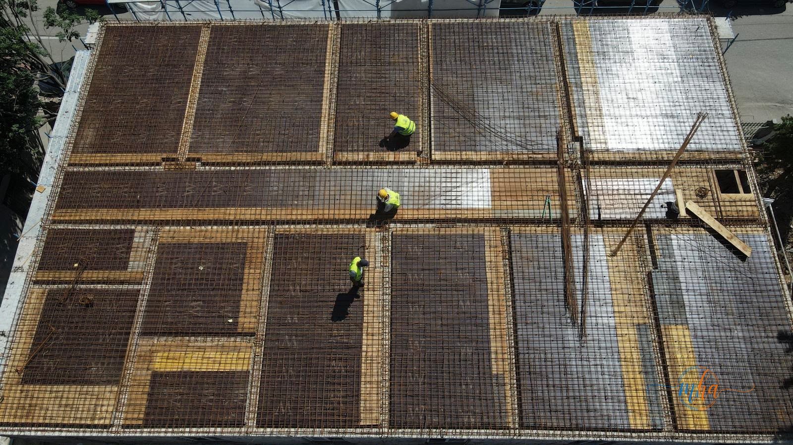
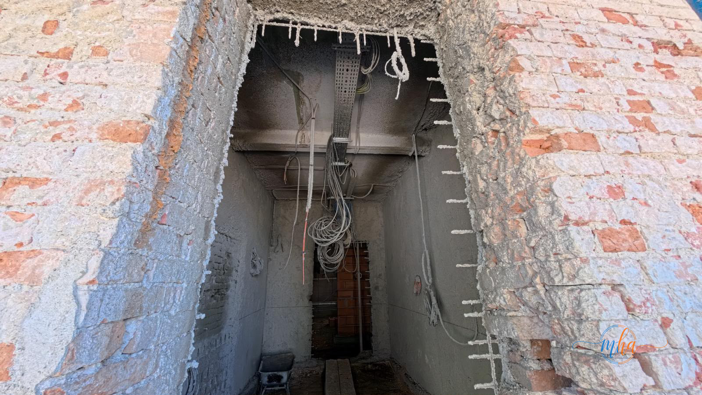
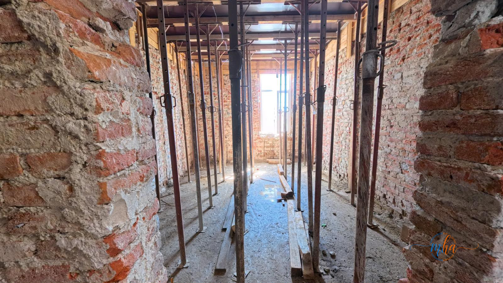
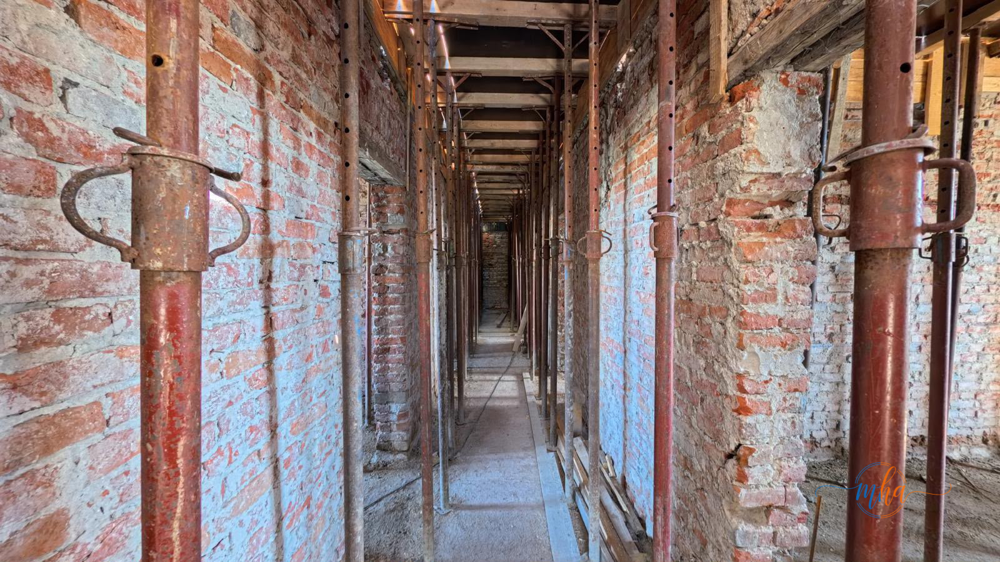

Lucrările de consolidare seismică și de creștere a eficienței energetice a Pavilionului Dermato-Venerice din cadrul Spitalului Județean de Urgență Drobeta-Turnu Severin, investiție derulată de Consiliul Județean Mehedinți, se desfășoară conform graficului de execuție. Constructorul Zeblex continuă execuția lucrărilor într-un ritm susținut, asigurând respectarea etapelor tehnice și a termenelor stabilite.
În calitate de antreprenor, Zeblex mobilizează constant echipele pe șantier, monitorizând fiecare etapă a procesului de reabilitare pentru a garanta atât siguranța structurală a clădirii, cât și calitatea finisajelor și instalațiilor.
🏥 Date proiect — Pavilion Dermato-Venerice, Spitalul Județean Severin
| Localitate | Drobeta-Turnu Severin, Mehedinți |
| Beneficiar | Consiliul Județean Mehedinți |
| Tip proiect | Consolidare seismică & eficiență energetică |
| Executant | Zeblex |
| Stadiu instalații electrice | Aproximativ 50% |
| Stadiu instalații sanitare | Aproximativ 50% |
Lucrări finalizate până în prezent
Echipele Zeblex au dus deja la îndeplinire câteva dintre etapele esențiale ale proiectului, esențiale pentru siguranța structurală a clădirii:
✅ Lucrări executate de Zeblex
- 🏗️ Consolidările structurale ale clădirii — finalizate
- 🧱 Turnarea plăcii de pardoseală la nivelul parterului
- 🏢 Turnarea planșeului peste etajul 1
- ⚡ Instalații electrice — stadiu fizic de aproximativ 50%
- 🚿 Instalații sanitare — stadiu fizic de aproximativ 50%

Echipa Zeblex la lucrările de turnare a planșeului — vedere aeriană | Foto: Zeblex

Lucrări de instalații electrice în execuție — stadiu fizic 50% | Foto: Zeblex
Rolul Zeblex în implementarea proiectului
Compania Zeblex asigură execuția lucrărilor la Pavilionul Dermato-Venerice cu profesionalism, respectând atât etapele tehnice impuse de proiectul de consolidare seismică, cât și termenele contractuale stabilite cu Consiliul Județean Mehedinți. Mobilizarea constantă a echipelor pe șantier reflectă angajamentul antreprenorului pentru finalizarea la timp a unei investiții de interes major pentru sistemul medical din județ.
🏗️ Zeblex — Construcții și consolidări la standarde înalte
Colaborarea dintre Consiliul Județean Mehedinți și Zeblex demonstrează capacitatea companiei de a gestiona proiecte complexe de consolidare seismică a unor clădiri de importanță publică. Zeblex continuă să mobilizeze echipe specializate pe șantier, asigurând execuția lucrărilor la cele mai înalte standarde tehnice și respectarea strictă a graficului de execuție.

Consolidare interioară cu structuri metalice de susținere | Foto: Zeblex

Galerie tehnică pentru instalațiile sanitare și electrice | Foto: Zeblex
Etapele următoare ale proiectului
În perioada următoare, echipele Zeblex vor finaliza alte etape importante ale proiectului de reabilitare și modernizare a clădirii:
- 🧱 Tencuielile pereților de la parter și subsol
- 🏠 Șarpanta acoperișului
- 🪟 Demontarea tâmplăriei exterioare
Prin această investiție, Consiliul Județean Mehedinți urmărește consolidarea seismică a imobilului, creșterea eficienței energetice și asigurarea unor condiții moderne, sigure și eficiente pentru desfășurarea actului medical, în beneficiul pacienților și al personalului Spitalului Județean de Urgență Drobeta-Turnu Severin.
„Lucrările de consolidare seismică a Pavilionului Dermato-Venerice avansează conform graficului, datorită mobilizării constante a echipelor Zeblex pe șantier. Investiția va asigura condiții moderne și sigure pentru pacienții și personalul medical din Drobeta-Turnu Severin."